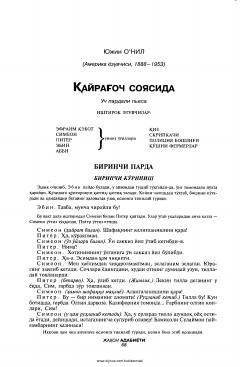

QSOila a'zolarining meros va boylik uchun kurashi haqidagi dramatik asar.
Ushbu asar amerikalik yozuvchi Yujin O'Nilning mashhur dramasi bo'lib, unda bir oila a'zolarining o'zaro munosabatlari, meros va boylik ilinjidagi ziddiyatlar tasvirlanadi. Asar voqealari fermer xo'jaligida bo'lib o'tadi va insoniy ehtiroslar hamda qiyin taqdirlarni ochib beradi.